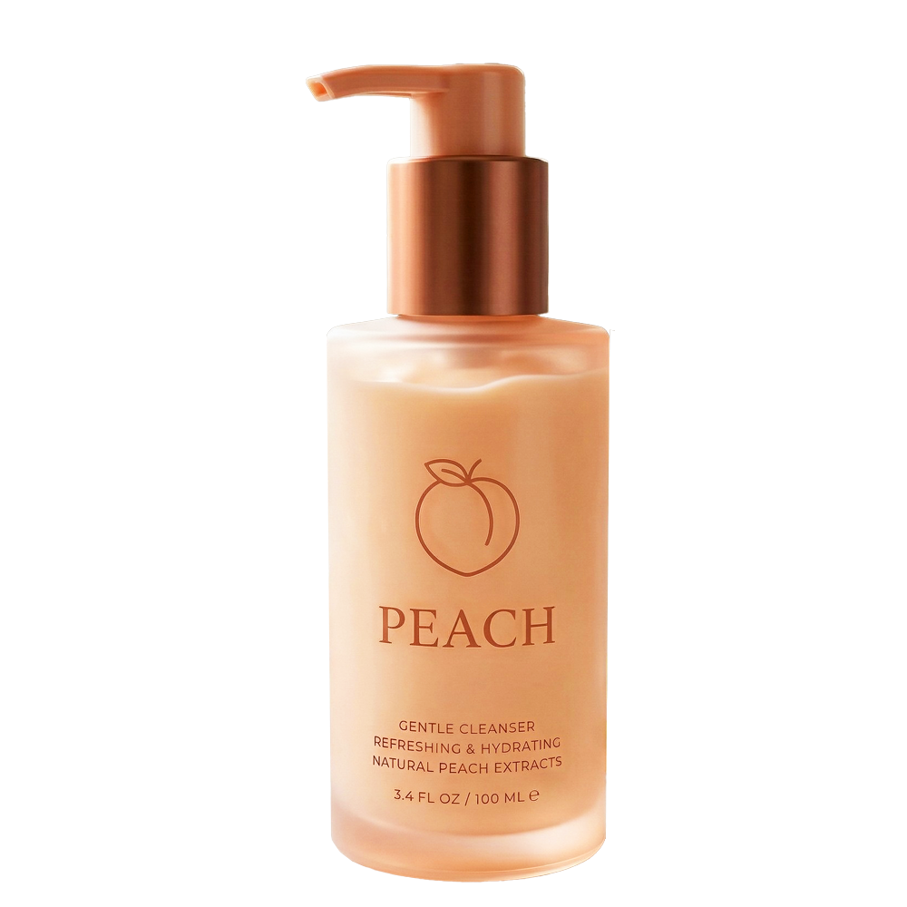
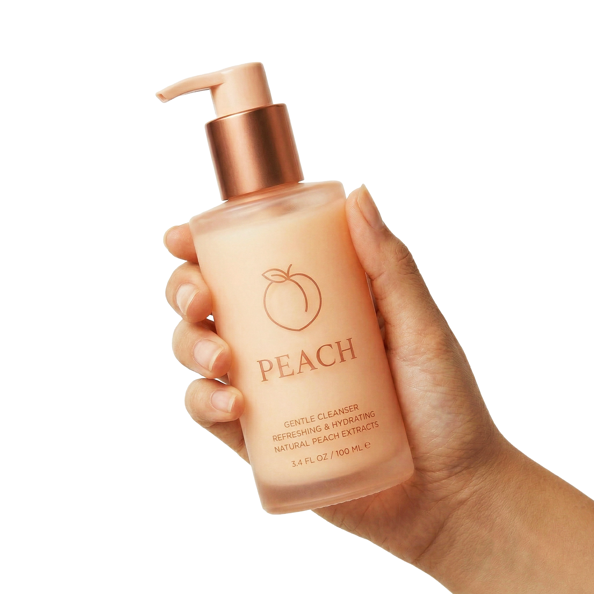
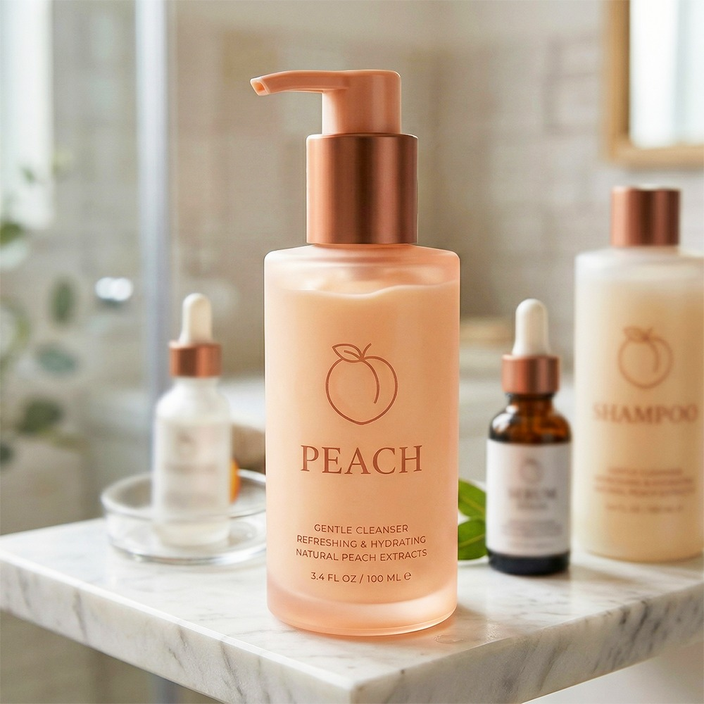

Peach Cream
A skincare-first approach to comfort, hydration, and barrier support. No steroids. No numbing. Just happy skin.
$50.00
$60.00
pH-balanced & Fragrance free
No steroids / no numbing agents
Dermatologist reviewed
Ships worldwide
Quantity:
Add To Cart
Description
Peach Cream is a daily perianal skincare cream — not a drug, just clean, clinical-grade care. Formulated with ceramides, panthenol, bisabolol, and allantoin to soothe minor irritation, support your skin barrier, and help delicate skin feel comfortable.
How To Use
- Cleanse the area gently with warm water and pat dry.
- Apply a small, pea-sized amount of Peach Cream.
- Gently massage until absorbed.
- Use once or twice daily.
Price Breakdown
- Regular Price: $60.00
- Sale Price: $50.00
- You Save: $10.00 (17% off)
Ingredients
Water, Glycerin, Ceramide NP, Panthenol, Allantoin, Bisabolol, Betaine.
Shipping & Delivery
- Standard Shipping: 5-7 business days
- Express Shipping: 2-3 business days
 1 (1).svg)